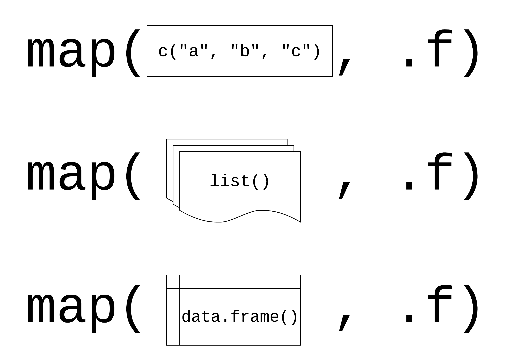
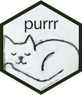
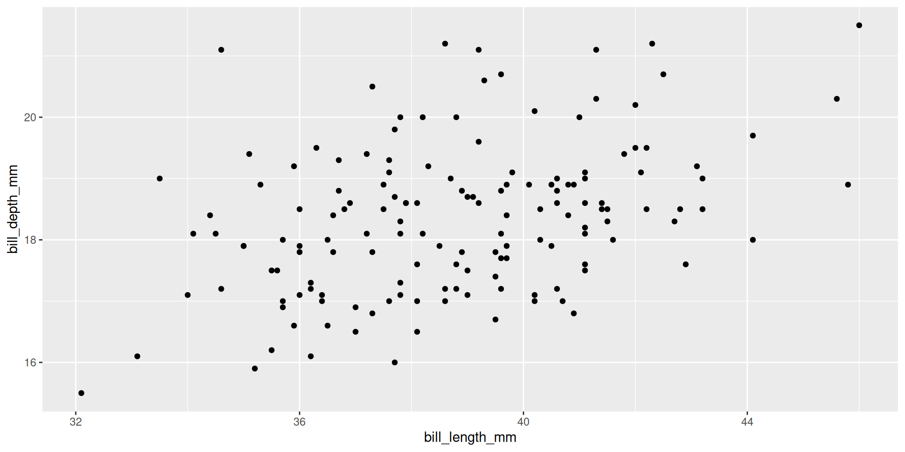
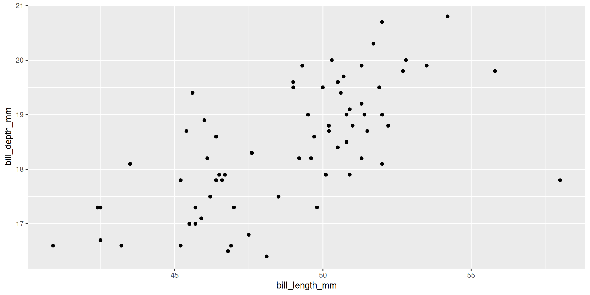
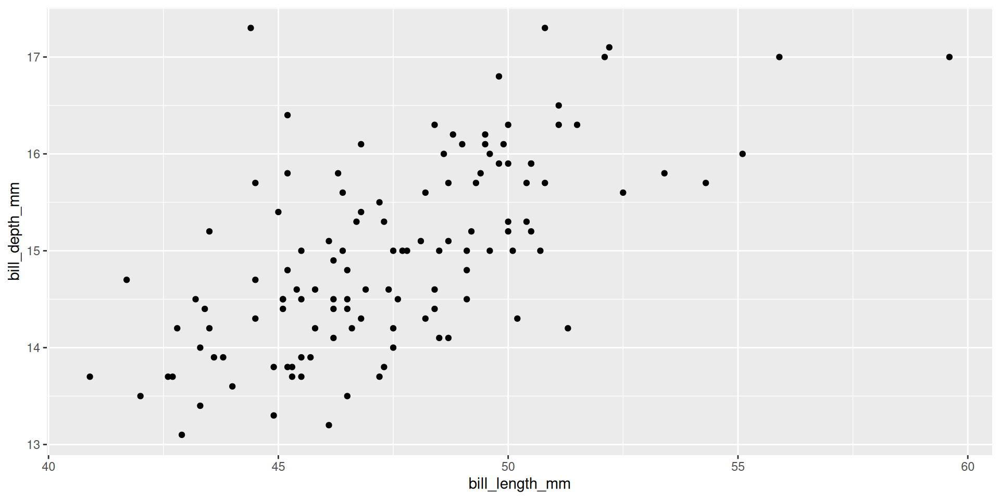

2023-03-29
for (counter in min:max) {
# What you want repeated.
# Index counter-specific vector with [counter]
}for (i in 1:nrow(penguins)) {
bill_size[i] <- penguins$bill_length_mm[i] * penguins$bill_depth_mm[i]
}Error: object 'bill_size' not foundWarning
You must initialize variables that you build in for loops.
bill_size <- NA
for (i in 1:nrow(penguins)) {
bill_size[i] <- penguins$bill_length_mm[i] * penguins$bill_depth_mm[i]
}for (i in month.name) {
print(paste0(i, " has ", str_length(i), " letters."))
}[1] "January has 7 letters."
[1] "February has 8 letters."
[1] "March has 5 letters."
[1] "April has 5 letters."
[1] "May has 3 letters."
[1] "June has 4 letters."
[1] "July has 4 letters."
[1] "August has 6 letters."
[1] "September has 9 letters."
[1] "October has 7 letters."
[1] "November has 8 letters."
[1] "December has 8 letters."

purrr::map() applies functions repeatedly across data
$bill_length_mm
[1] 43.92193
$bill_depth_mm
[1] 17.15117
$flipper_length_mm
[1] 200.9152What kind of data type does map() return?
Need different data types as output?
Use split() like dplyr::group_by()
$Adelie
Call:
lm(formula = bill_length_mm ~ bill_depth_mm, data = .x)
Coefficients:
(Intercept) bill_depth_mm
23.068 0.857
$Chinstrap
Call:
lm(formula = bill_length_mm ~ bill_depth_mm, data = .x)
Coefficients:
(Intercept) bill_depth_mm
13.428 1.922
$Gentoo
Call:
lm(formula = bill_length_mm ~ bill_depth_mm, data = .x)
Coefficients:
(Intercept) bill_depth_mm
17.230 2.021 Create multiple plots
penguins |>
split(penguins$species) |>
map(~ ggplot(.x, aes(bill_length_mm, bill_depth_mm)) + geom_point())$Adelie
$Chinstrap
$Gentoo
First, we’ll create multiple data files
Get file names and paths with dir()
(penguin_files <- dir(path = "../data",
pattern = "penguin_data.csv",
full.names = TRUE))[1] "../data/adelie_penguin_data.csv" "../data/chinstrap_penguin_data.csv"
[3] "../data/gentoo_penguin_data.csv" Map readr::read_csv() to each element of penguin_files
(penguin_data1 <- map(penguin_files, read_csv))[[1]]
# A tibble: 152 × 8
species island bill_length_mm bill_depth_mm flipper_length_mm body_mass_g
<chr> <chr> <dbl> <dbl> <dbl> <dbl>
1 Adelie Torgersen 39.1 18.7 181 3750
2 Adelie Torgersen 39.5 17.4 186 3800
3 Adelie Torgersen 40.3 18 195 3250
4 Adelie Torgersen NA NA NA NA
5 Adelie Torgersen 36.7 19.3 193 3450
6 Adelie Torgersen 39.3 20.6 190 3650
7 Adelie Torgersen 38.9 17.8 181 3625
8 Adelie Torgersen 39.2 19.6 195 4675
9 Adelie Torgersen 34.1 18.1 193 3475
10 Adelie Torgersen 42 20.2 190 4250
# ℹ 142 more rows
# ℹ 2 more variables: sex <chr>, year <dbl>
[[2]]
# A tibble: 68 × 8
species island bill_length_mm bill_depth_mm flipper_length_mm body_mass_g
<chr> <chr> <dbl> <dbl> <dbl> <dbl>
1 Chinstrap Dream 46.5 17.9 192 3500
2 Chinstrap Dream 50 19.5 196 3900
3 Chinstrap Dream 51.3 19.2 193 3650
4 Chinstrap Dream 45.4 18.7 188 3525
5 Chinstrap Dream 52.7 19.8 197 3725
6 Chinstrap Dream 45.2 17.8 198 3950
7 Chinstrap Dream 46.1 18.2 178 3250
8 Chinstrap Dream 51.3 18.2 197 3750
9 Chinstrap Dream 46 18.9 195 4150
10 Chinstrap Dream 51.3 19.9 198 3700
# ℹ 58 more rows
# ℹ 2 more variables: sex <chr>, year <dbl>
[[3]]
# A tibble: 124 × 8
species island bill_length_mm bill_depth_mm flipper_length_mm body_mass_g
<chr> <chr> <dbl> <dbl> <dbl> <dbl>
1 Gentoo Biscoe 46.1 13.2 211 4500
2 Gentoo Biscoe 50 16.3 230 5700
3 Gentoo Biscoe 48.7 14.1 210 4450
4 Gentoo Biscoe 50 15.2 218 5700
5 Gentoo Biscoe 47.6 14.5 215 5400
6 Gentoo Biscoe 46.5 13.5 210 4550
7 Gentoo Biscoe 45.4 14.6 211 4800
8 Gentoo Biscoe 46.7 15.3 219 5200
9 Gentoo Biscoe 43.3 13.4 209 4400
10 Gentoo Biscoe 46.8 15.4 215 5150
# ℹ 114 more rows
# ℹ 2 more variables: sex <chr>, year <dbl>Use purrr::map_df() to return output as data frame
(penguin_data2 <- map_df(penguin_files, read_csv))# A tibble: 344 × 8
species island bill_length_mm bill_depth_mm flipper_length_mm body_mass_g
<chr> <chr> <dbl> <dbl> <dbl> <dbl>
1 Adelie Torgersen 39.1 18.7 181 3750
2 Adelie Torgersen 39.5 17.4 186 3800
3 Adelie Torgersen 40.3 18 195 3250
4 Adelie Torgersen NA NA NA NA
5 Adelie Torgersen 36.7 19.3 193 3450
6 Adelie Torgersen 39.3 20.6 190 3650
7 Adelie Torgersen 38.9 17.8 181 3625
8 Adelie Torgersen 39.2 19.6 195 4675
9 Adelie Torgersen 34.1 18.1 193 3475
10 Adelie Torgersen 42 20.2 190 4250
# ℹ 334 more rows
# ℹ 2 more variables: sex <chr>, year <dbl>